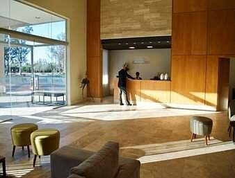
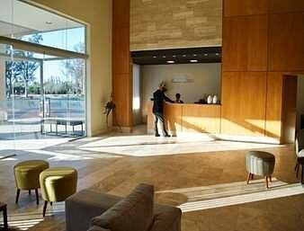
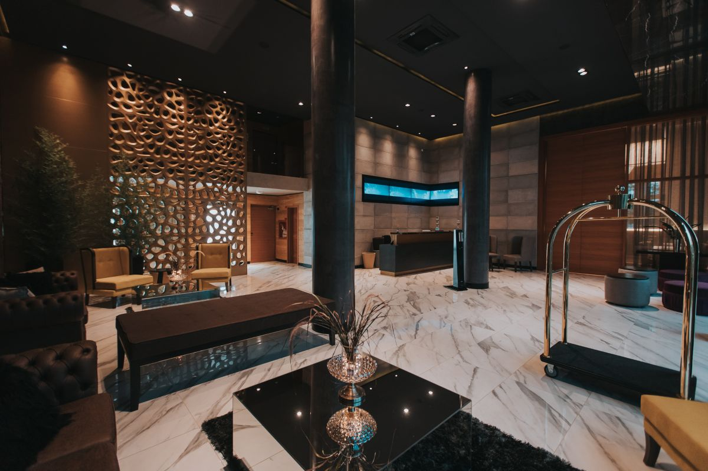
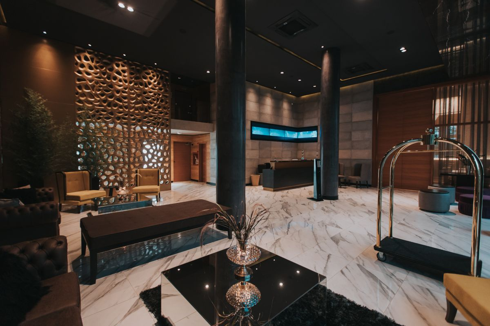

San Francisco
es una encantadora ciudad que combina historia, cultura y belleza natural.Con sus pintorescas
calles y su ambiente acogedor, es un destino ideal para aquellos que buscan sumergirse
en la autenticidad y el encanto de una localidad tradicional.


 


 
